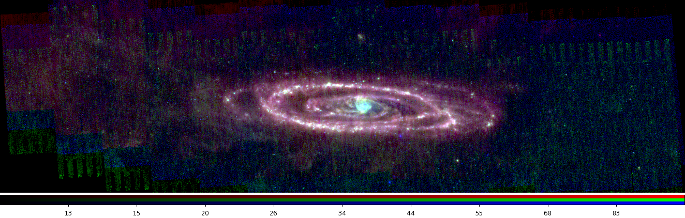
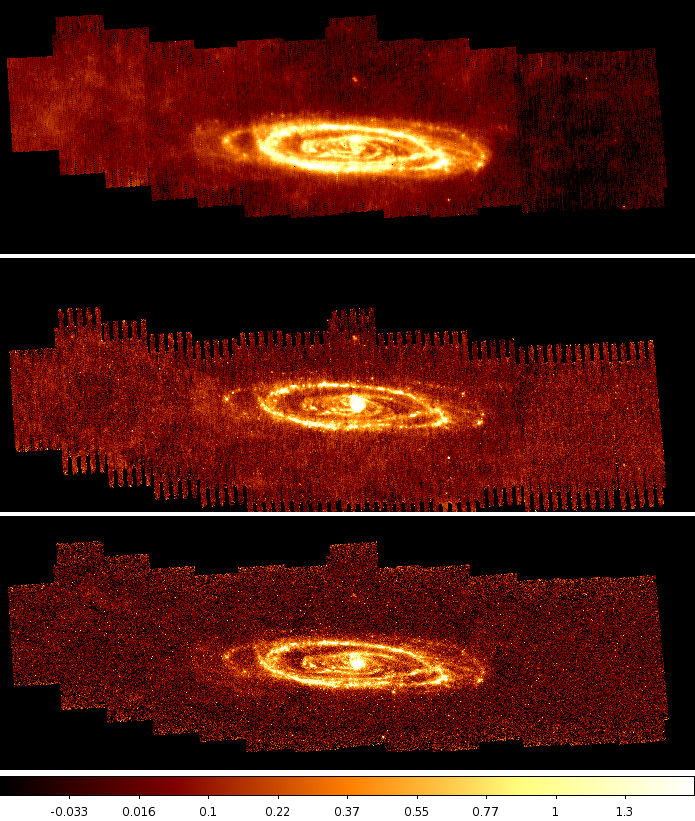

Full Spitzer/MIPS Images of M31
The full MIPS images of M31 are given below. These images are a combination of two MIPS Guarenteed Time Observation (GTO) programs both lead by Karl Gordon.
The data from the 1st GTO program were published in the ApJ as Spitzer MIPS Infrared Imaging of M31: Further Evidence for a Spiral-Ring Composite Structure by Gordon et al. (2006). Please see this paper for the data reduction details. Please reference this paper if you the MIPS data a paper, talk, poster, etc. Thanks.
One additional data reduction step has been done to the MIPS 70 micron data beyond that described in Gordon et al. (2006). The 70 micron flux non-linearity has been applied.
Data: Calibrated FITS files (tar.gz file).

